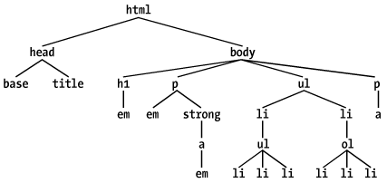
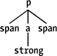
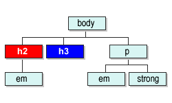

CSS güçlüdür, çünkü CSS uygun stilleri ve bu stilleri nasıl uygulanacağını belirlemek için (X)HTML dökümanının yapısını kullanır. (X)HTML Sayfa yapısına stil uygulamanın bir çok yolu vardır. Ancak bu yolları öğrenmeden önce (X)HTML hiyerarşisini öğrenmemiz gerekir.
(X)HTML Döküman Hiyerarşisini Anlamak
Seçici(Selector) ve Döküman arasındaki ilişkiyi anlayabilmemiz için,
dökümanların nasıl planlandığını tekrar gözden geçirmemiz gerekir.
Aşağıdaki basit (X)HTML dökümanı üzerine biraz düşünelim:
<html> <head> <title> CSS (X)HTML Hiyerarşisi </title> </head> <body> <h1>CSS<em>(X)HTML Hiyerarşisi </em></h1> Sitemize hoş geldiniz <em>Merhaba</em>biz <strong>sizler için <a href="konu.html"> bazı <em>önemli</em> konular </a></strong>! hazırladık <ul> <li>Konu Başlıkları : <ul> <li><strong>Asıl</strong> Giriş</li> <li>Önsöz</li> <li><em>ilk</em> bölüm: <ol> <li>Elma</li> <li>Armut</li> <li>Karpuz</li> </ol> </li> </ul> </li> <li>...vd.</li> </ul> <p>Ayrıntılılı bilgi çin <a href="mailto:bilgi@zerzebvat.com"> mesaj gönder </a></p> </body> </html>
CSS'in güçlü olmasının en büyük nedeni (X)HTML elementleri arasındaki ilişkiden yararlanmasıdır. (X)HTML dökümanları gizli bir hiyararşi ile oluşturulur. Bu hiyerarşi içinde tüm (X)HTML elementleri kendilerine uygun bir yer bulur. Bu ilişkiyi biz soy ağacına benzete biliriz.

Yukarıdaki (x)html yapısını bir soy ağacı gibi düşünüp değerlendirirsek: Bir elementin ebeveyn(anne-baba) olduğunu anlamak için o elementin altında başka element olup olmadığına bakmalıyız, eğer varsa o element ebeveyndir. Yukarıdaki şekilde p elementine dikkat edelim. p bir ebveyndir çünkü altında em ve strong elementleri bulunmaktadır. strong da bir ebeveyndir ki onun altında a elementi vardır. Bir elementin çocuk element olduğunu anlamak için de üstünde bir elementin olup olmadığına bakarız. Yani yukarıdaki olayın tersi. Buna göre strong elementi p elementinin bir çocuğudur. Daha karmaşık yapılarda ata(ancestor) ve torun(descendant) ilişkisi vardır. Aradaki fark eğer bir element diğer elementin tam olarak bir seviye üstünde ise o ata diğeride torun durumundadır. Yukarıdaki şekili incelersek ilk ul elementinin iki adet li çocuk elementi bulunmaktadır ve bu iki li elementinin altındaki tüm elementler ilk ul elementinin torun elementleridir.
Torun Seçicileri (Descendant Selectors)
Bu modelin avantajlarından birisi Torun Seçicileridir(diğer bir
isimleride içiçe seçicilerdir). Torun Seçicilere yapılan tanımlama
sadece belitilen elementlere uygulanır bu kuralların haricinde kalanlara
ise uygulanmaz. Bir örnek verecek olursak bir h1 elementinin em
torun elementine belirli bir stil uygulamak istesek. Normalde bir sınıf
tanımlaması yapılarak her h1 elementi altındaki em elementini
tek tek seçerek bu sınıfı uygulamamız gerekir ki bunun font etiketi
uygulmasından farkı yoktur. Açıkcası bu işlemi yapmak uzun zaman
alacaktır. Ancak Torun Seçicisi kullanarak bu işi kolayca yapabilriz.
örnek kod yazarsak:
h1 em { color: gray; }
Bu kod dökümandaki atası h1 olan tüm em elementlerini gri yapacaktır. Diğer em'ler ise bu kuralı
uygulamayacaktır. Torun Seçicilerde, seçici kısmı birbirinden bir
boşlukla ayrılmış iki veya daha fazla seçiciden oluşur. Aradaki boşluk
bağlayıcı özellik taşır. Sadece iki elementle sınırlı değiliz, sınırsız
element tanımlayabiliriz.
ul ol ul em { color: gray; }
Torun Seçiciler çok kuvvetli olabilirler. Onlar (X)HTML ile yapılmasının imkanı olmayan işler yaparlar. Örnek bir
dökümanda iki adet alan oluşturduğumuzu düşünün birinci alanın
ardalanı(background) mavi, ikinci alanın ardaalanının beyaz olduğunu
düşünün ve her iki alanın içinde de linkler olduğunu farz edelim. Tüm
linkleri mavi olarak atamamız mümkün olmayacaktır çünkü ilk alanın
ardaalanı mavi olduğu için linkler görünmeyecektir. Çözüm Torun
Seçicilerindedir; ilk alan içindeki linklere farklı renk diğerlerine
farklı renk tanımlaması yaparak bu işi halledebiliriz.
td.sidebar { background: blue; } td.main { background: white; } td.sidebar a:link { color: white; } td.main a:link { color: blue; }
Bir örnek daha verelim. blockquote ve p elementleri içindeki b elementi ile blockquote içinde ve normal
paragraf içinde geçen b elementlerine özel bir atama yapmak
istiyoruz bunun için kod yazarsak:
blockquote b, p b { color: gray; }
Koda dikkat edersek her iki atamayı ayrı ayrı yapmak yerine araya bir virgül koyarak birlikte yaptığımızı görürsünüz.
Tarayıcı Uyumu
Firefox
Chrome
Safari
Opera
İnternet Explorer
Mobil Tarayıcılar
iOS Safari
Opera Mobile
Android Browser
Çocuk Seçicileri
Bazı durumlarda keyfi olarak bir torun seçicisi kullanmaktansa daha
ayrıntılı bir ayrım yapmak isteyebiliriz. Örneğin bir h1 elementinin
altındakistrong elementlerinden sadece Çocuk Elementi için
tanımlamalar yapmak istersek (torun elementleri hariç), Bunun için çocuk
bağlayıcısını kullanırız ( > ) büyüktür işareti
h1 > strong { color: red; }
HTML;
<h1>Bu <strong>koda</strong> uygulanacaktır.</h1> <h1>Bu <em>koddaki <strong> bu kısım </strong></em> uygulama dışıdır..</h1>
Yukardaki durumda sadece ilk strong elementi için tanımlama gerçekleşecektir ikincisi için herhangi bir stil tanımı uygulanmayacaktır.

Yukarıda ana örneğimizin bir kısmı gösterilemektedir. Ebeveyn-çocuk ilişkisini daha iyi anlamak için hazırlanmıştır. aelementi strong'un ebevenynidir. p elementide a nın ebeveynidir. Ancak p elementi strong'un ebeveyni değildir. Biz burada p > a ve a > strong şeklinde tanımlama yapabilriz ancak p > strong tanımlamasını yapamayız. Birde aynı seçici içinde hem torun birleştiricisini hemde çocuk birleştiricisini kullanabiliriz.
table.summary td > p
Tarayıcı Uyumu
Firefox
Chrome
Safari
Opera
İnternet Explorer
Mobil Tarayıcılar
iOS Safari
Opera Mobile
Android Browser
Bitişik Kardeş Seçiciler
Bitişik Kardeş Seçicileri biribiri ardına gelen aynı seviyedeki
elementlerden sonra gelenine stil tanımlamak için kullanılır. Tam olarak
"Bir Ufak Kardeş Seçicisi" olmalıdır. Bir örnek verelim bir başlığımız
var ve sonrasında ard arda paragraflar geliyor. Biz başlık ile hemen
ardından gelen paragrafın arasına mesafe koymak için bu seçiciyi
kullanabiliriz.
<body> <h2>Başlık 2</h2> <p>Buraya <em>önemli</em> ve <strong>iyi</strong>kod gir</p> <p>Buraya <em>önemli</em> ve <strong>iyi</strong>kod gir</p> </body>
Dökümanın yapısı:

Biz burada h2 ve h3 arasında boşluk vermek için aşağıdaki kodu
kullanırız:
h2 + p { margin-top: 10px; }
Tarayıcı Uyumu
Firefox
Chrome
Safari
Opera
İnternet Explorer
Mobil Tarayıcılar
iOS Safari
Opera Mobile
Android Browser
Sonuç olarak konunun başında söylediğimiz gibi CSS, (X)HTML elementlerinin kendi aralarındaki ilişkileri kullanarak bize bir çok avantaj sağlar. Bu sayede bir çok kod yığınından kurtulmuş oluruz ve kodlarımız bir düzene girer. Bu kuralları uyguladıkça önemini daha iyi anlayacağız. Çocuk Seçicileri ve Bitişik Kardeş Seçicileri'ni Internet Explorer 7 versiyonundan itibaren desteklemeye başlamıştır. Bu nedenle kullanımı konusunda dikkat etmeliyiz.
Genel Seçiciler
Genel Seçiciler bir elementi bütüne uygulamak için kullanılır bu işlem için * işareti kullanılır. Aşağıdaki kod tüm elementleri kırmızı yapacaktır.
* { color:red; }
Ayrıca bir katmanın içindeki sınıflara uygulamak istersek
div .uyari * { color:red; }
katman, .uyari sınıfı içindeki tüm elementler kırmızı olacaktır.
Tarayıcı Uyumu
Firefox
Chrome
Safari
Opera
İnternet Explorer
Mobil Tarayıcılar
iOS Safari
Opera Mobile
Android Browser
Yorumlar !